forms-server sobre el cluster forms_report, reutilizando ECR y EFS
Guía paso a paso para crear la task definition forms-server
y el servicio correspondiente en el cluster forms_report,
reutilizando la imagen ECR y el EFS rector-dev, con las lecciones del servicio admin.
Misma imagen, mismo EFS, servicio Forms listo en Fargate.
Captura o anota estos valores antes de empezar (no hace falta pantalla de AWS si ya los tienes).
| Concepto | Valor |
|---|---|
| Cluster | forms_report |
| Imagen ECR | Misma que admin: 730335573515.dkr.ecr.us-east-1.amazonaws.com/forms-docker@sha256:… (o tag) |
| EFS | fs-08471cc88d2a8edc3 (rector-dev) |
| VPC | vpc-055a4007418b34e64 |
| Subnets |
Solo pública: subnet-01212efd4a9ce759b (pub-A-SN)Acceso a Oracle 192.168.229.137 vía ruta en Pub-RT (Paso 8c).
No hace falta asociar database-A al servicio ECS.
|
| SG tarea | sg-0e1787d32bac71fcd (forms-sg-ecs) — ya tiene NFS en EFS |
| Rol ejecución | ecsTaskExecutionRole |
| Rol tarea (Exec) | ecs-forms-admin-task-role (reutilizable) |
| Nombre familia TD | forms-server |
| Nombre servicio | forms-server (sugerido) |
| Nombre contenedor | forms-server |
/domain):/aws-backup-restore_2020-04-19T22-54-07-041Z/domain_forms/domains/aws-backup-restore_2020-04-19T22-54-07-041Z/domain_forms/app/aws-backup-restore_2020-04-19T22-54-07-041Z/domain_forms/scripts/forms
En ECS los contenedores se encuentran por el DNS de Cloud Map (namespace forms.local),
no por los short names de docker-compose. Los tres nombres se fijan
antes del primer arranque y se usan igual en Service Discovery, dominio WebLogic,
Node Manager y variables de la task definition.
| Rol | Service Discovery (al crear el servicio) | FQDN | Machine en config.xml | Node Manager |
|---|---|---|---|---|
| Admin | weblogic-admin (servicio admin) | weblogic-admin.forms.local | AdminServerMachine | nodemanager/ |
| Forms | weblogic-forms (servicio forms) | weblogic-forms.forms.local | FormsMachine | nodemanager_forms/ |
| Reports | weblogic-reports (servicio reports-server) | weblogic-reports.forms.local | ReportsMachine | nodemanager_reports/ |
Alinear el dominio en EFS (una sola vez, con AdminServer y managed servers detenidos), desde el contenedor admin como oracle:
/u01/oracle/scripts/set-cloudmap-hostnames.sh --check # estado actual /u01/oracle/scripts/set-cloudmap-hostnames.sh # respalda y cambia a *.forms.local
El script (scripts/admin/set-cloudmap-hostnames.sh) cambia el listen-address de las tres
Machines en config/config.xml y ListenAddress en los tres
nodemanager.properties; deja respaldo .bak_<fecha> y es idempotente.
| Además, desde el principio | Valor |
|---|---|
| Task definitions forms / reports | ADMIN_SERVER_HOST=weblogic-admin.forms.local |
Regla interna en forms-sg-ecs | Todo el tráfico (TCP + UDP) con origen sg-0e1787d32bac71fcd:
Node Manager 5556, managed 9001/9012, admin ports, y Coherence (UDP 7574) |
Scripts WLST (create-*-machine.py) | Ya usan por defecto t3://weblogic-admin.forms.local:7001 y los FQDN
(CLOUDMAP_NAMESPACE, default forms.local; en compose exportar CLOUDMAP_NAMESPACE='') |
UnknownHostException: weblogic-admin en Node Manager/AdminServer, y en
WLS_REPORTS Hostname weblogic-reports ... failed to resolve + Coherence
Failure to join a cluster for 300 seconds → FAILED (ver Paso 12).
forms-server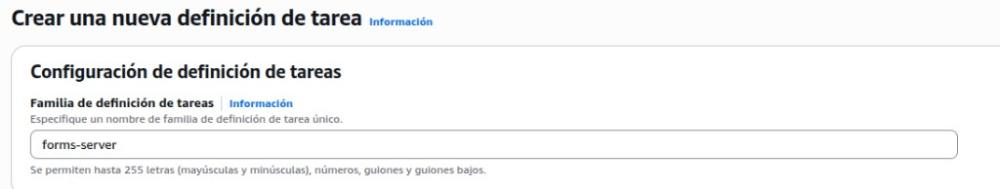
forms-server| Campo | Valor |
|---|---|
| Tipo de inicio | AWS Fargate ✅ |
| SO / Arquitectura | Linux / X86_64 ✅ |
| CPU | 2 vCPU ✅ |
| Memoria | 4 GB ✅ |
| Rol de tarea | ecs-forms-admin-task-role ✅ |
| Rol de ejecución | ecsTaskExecutionRole ✅ |
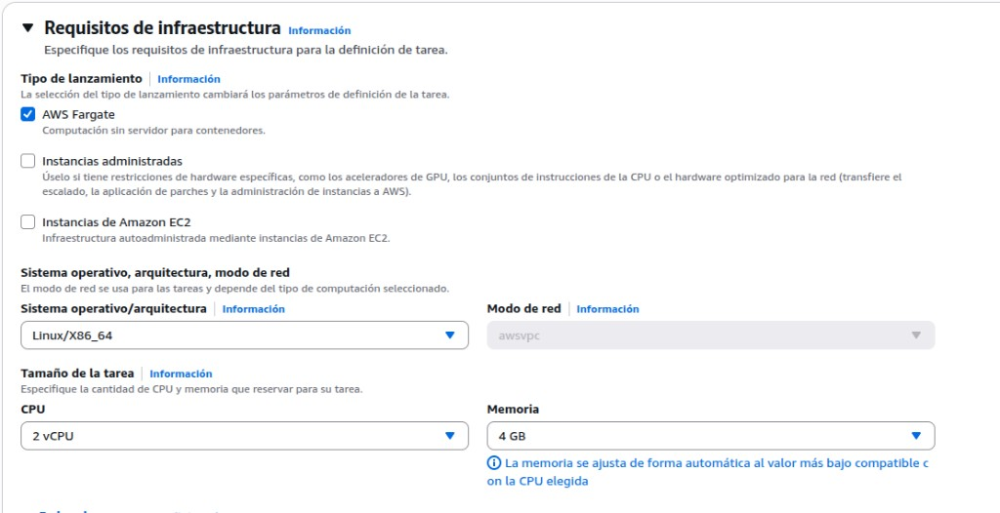
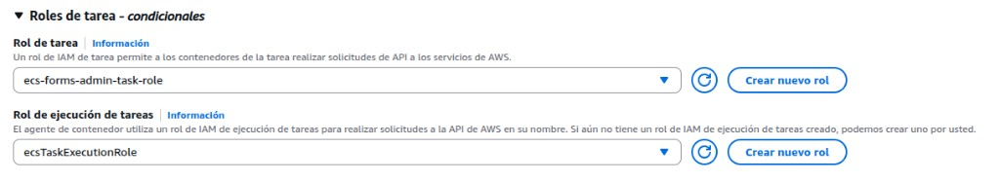
ecs-forms-admin-task-role + ejecución ecsTaskExecutionRole| Campo | Valor |
|---|---|
| Nombre | forms-server ✅ |
| Esencial | Sí ✅ |
| URI imagen | Misma ECR que admin (forms-docker@sha256:9667eb31…) ✅ |
| Puertos | 9001/9501/9991/5556 ✅ |
| Comando (pruebas) | Entrypoint sh,-c + comando sleep,infinity ✅ |
| Comando (producción) | /u01/oracle/scripts/entrypoint.sh |
Variables de entorno (compose):
ORACLE_HOME=/u01/oracle DOMAIN_NAME=forms_domain DOMAIN_HOME=/u01/oracle/user_projects/domains/forms_domain ADMIN_SERVER_NAME=AdminServer ADMIN_SERVER_HOST=weblogic-admin.forms.local ADMIN_SERVER_PORT=7001 ADMIN_USER=weblogic ADMIN_PASSWORD=<usar Secrets Manager luego> MANAGED_SERVER_NAME=WLS_FORMS MANAGED_SERVER_PORT=9001 LD_LIBRARY_PATH=/u01/oracle/lib:/u01/oracle/oracle_common/lib
ADMIN_SERVER_HOST=weblogic-admin.forms.local se configura en
AWS Cloud Map (namespace DNS privado forms.local, servicio
de detección weblogic-admin) y se asocia al contenedor admin mediante
ECS Service Discovery (Pasos 10–11). Así Forms resuelve el AdminServer
por nombre FQDN sin usar IP fija. En el dominio WebLogic,
nodemanager.properties / config.xml deben usar el mismo FQDN
(Paso 12).
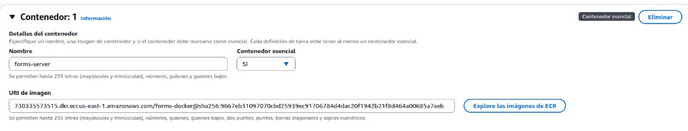
forms-server + imagen ECR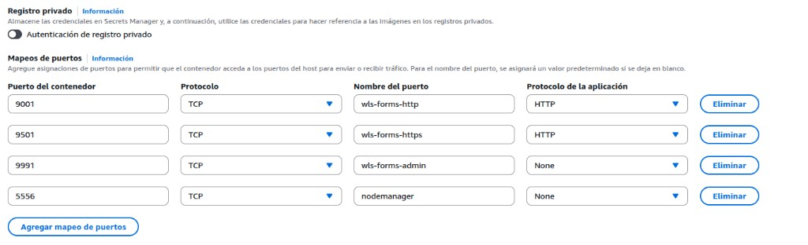
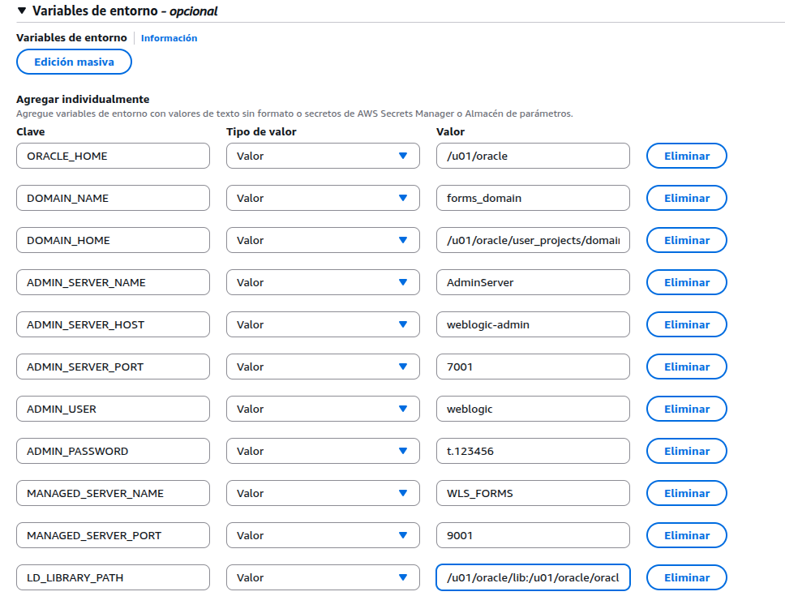
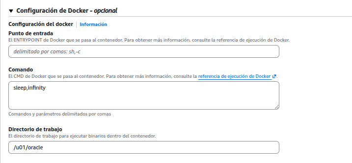
sh,-c, comando
sleep,infinity, directorio de trabajo /u01/oracle
sleep infinity permite
que la tarea ECS quede RUNNING sin arrancar WebLogic automáticamente,
para entrar con ECS Exec y lanzar el entrypoint / AdminServer / WLS_FORMS
a mano mientras DNS, dominio y red no están listos. En producción se puede volver a
poner el script de arranque como comando.
Atención: si se redefine la variable PATH en la Task Definition
sin incluir /bin / /usr/bin (p. ej. con ${PATH}, que
ECS no expande), falla con
exec: "sleep": executable file not found in $PATH. No sobreescribir
PATH en la task def, o usar ruta absoluta (/bin/sleep).
sh,-c. Comando: sleep,infinity
(parámetros separados por comas). Directorio de trabajo: /u01/oracle.
| Campo | Valor |
|---|---|
| Almacenamiento efímero | 100 GiB |
| Volumen | File system | Root directory |
|---|---|---|
efs-domains |
fs-08471cc88d2a8edc3 |
/aws-backup-restore_2020-04-19T22-54-07-041Z/domain_forms/domains |
efs-app |
fs-08471cc88d2a8edc3 |
/aws-backup-restore_2020-04-19T22-54-07-041Z/domain_forms/app |
efs-scripts |
fs-08471cc88d2a8edc3 |
/aws-backup-restore_2020-04-19T22-54-07-041Z/domain_forms/scripts/forms |
/domain al root directory.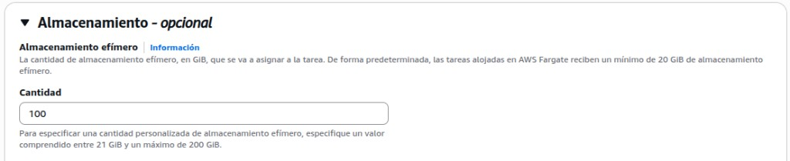
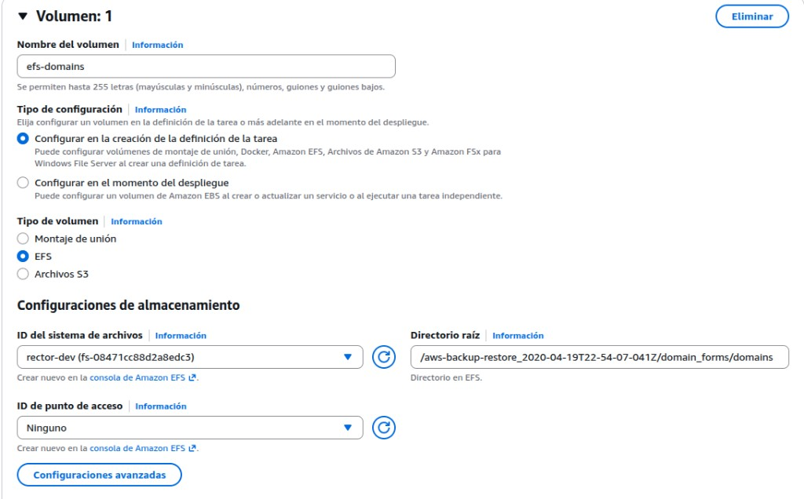
efs-domains en EFSefs-app en EFS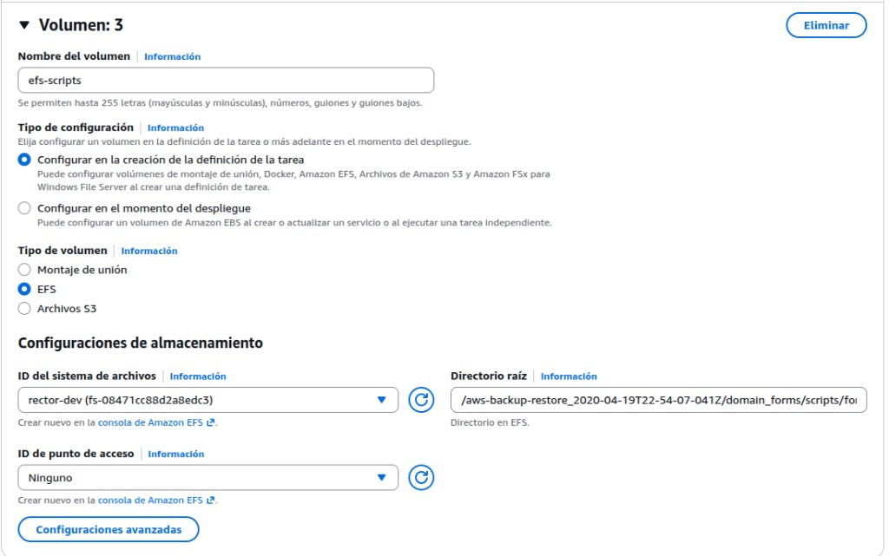
efs-scripts en EFS| Volumen | Ruta contenedor | Solo lectura |
|---|---|---|
| efs-domains | /u01/oracle/user_projects/domains | No |
| efs-app | /u01/oracle/user_projects/apps | No |
| efs-scripts | /u01/oracle/scripts | No |
Crear la definición → quedó forms-server:2 ✅.
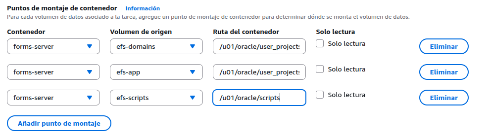
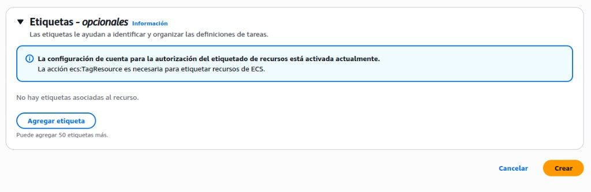
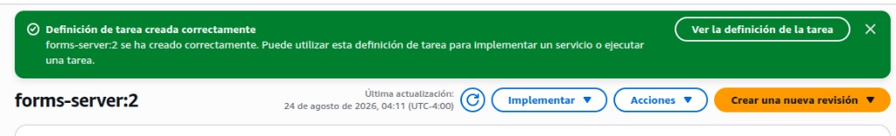
forms-server:2forms_report → Servicios → Crearforms-server:4forms-server1forms.local,
nombre weblogic-forms, registro A, TTL 15 → weblogic-forms.forms.local
(mismo procedimiento que weblogic-admin, Paso 11). Solo se puede asociar al crear el servicio.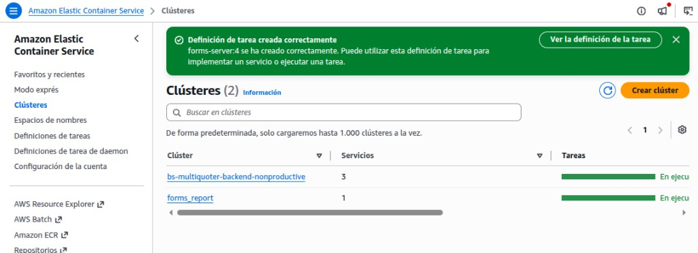
forms-server:4 ya creada)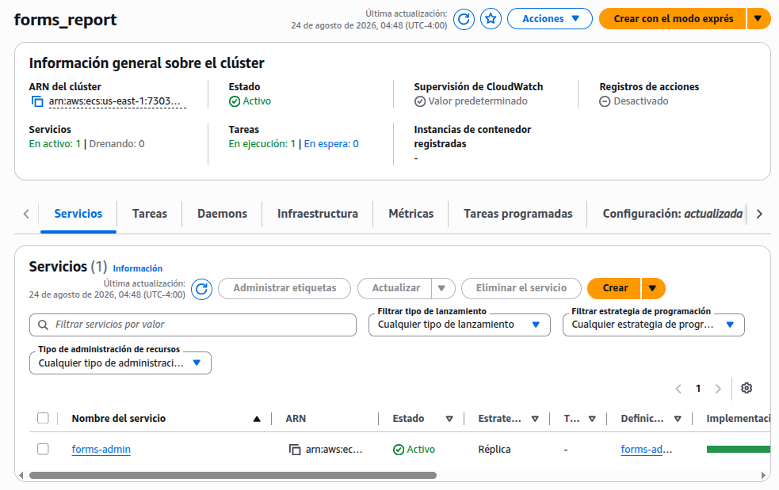
forms_report → Crear servicio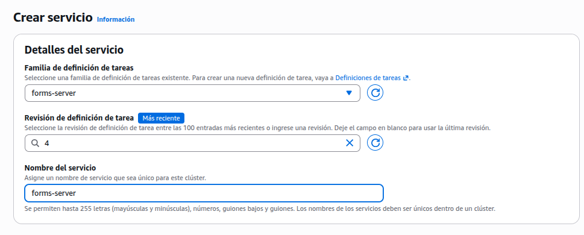
forms-server, revisión 4, nombre forms-server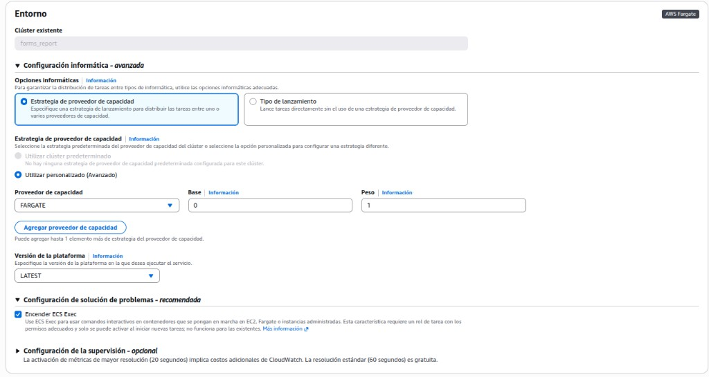
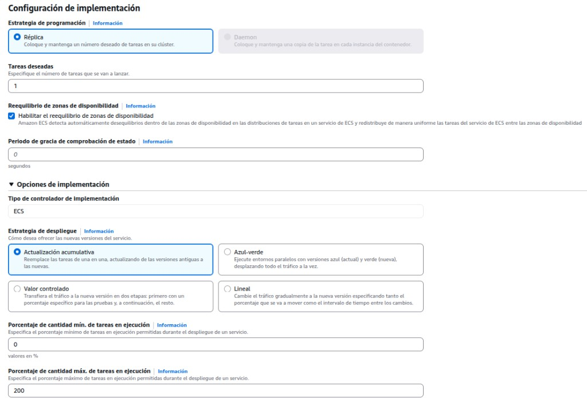
| Campo | Valor |
|---|---|
| Estrategia | Actualización acumulativa |
| Mín. healthy % | 0 |
| Máx. % | 200 (si AZ rebalancing está ON) |
| ALB / Service Discovery / Auto scaling | No (por ahora) |
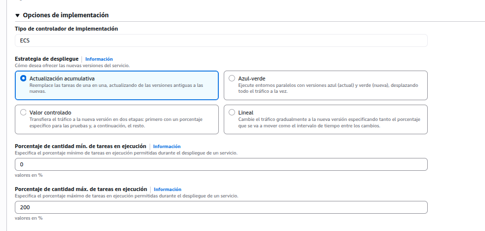
Topología recomendada del servicio (admin / forms / reports):
solo la subnet pública pub-A (ECR, IP pública, consola HTTP)
más la ruta a Oracle en la route table Pub-RT (Paso 8c).
database-A al servicio ECS.
Con la ruta 192.168.229.137/32 → pcx-… en Pub-RT las tareas en
pub-A alcanzan la BD. Si se asocian pub-A + database-A,
ECS puede colocar la tarea en la privada: la IP pública queda asignada pero
no responde desde Internet (default route = NAT, no IGW).
| Campo | Valor recomendado |
|---|---|
| VPC | vpc-055a4007418b34e64 |
| Subnet del servicio | Solo subnet-01212efd4a9ce759b / vpc-Banesco-Seguros-VE-dev-pub-A-SN |
| Security group | sg-0e1787d32bac71fcd (forms-sg-ecs) |
| IP pública | ENABLED |
| BD Oracle | 192.168.229.137 vía peering pcx-0ad20c217472c7080 (ruta en Pub-RT) |
Subnet database-A | No asociar al servicio (referencia / contraste de rutas solamente) |
pub-A (única en el servicio)Agregar solo esta subnet al servicio ECS.
subnet-01212efd4a9ce759bvpc-Banesco-Seguros-VE-dev-pub-A-SNrtb-0a99542c9d91cd2cc (…-Pub-RT) — default 0.0.0.0/0 → igwdatabase-A (referencia; no asociar al servicio)
database-A (subnet-0f4dc6c60b100a66d) ya tenía la ruta a Oracle
en Priv-C-RT. Sirve como referencia del peering, pero
no hace falta listarla en la configuración de red del servicio ECS:
el acceso a BD se obtiene replicando esa ruta en Pub-RT (punto c).
subnet-0f4dc6c60b100a66dvpc-Banesco-Seguros-VE-dev-database-A-SNrtb-09c278a96f73d2b4c (…-Priv-C-RT) — 192.168.229.137/32 → pcx-… + NAT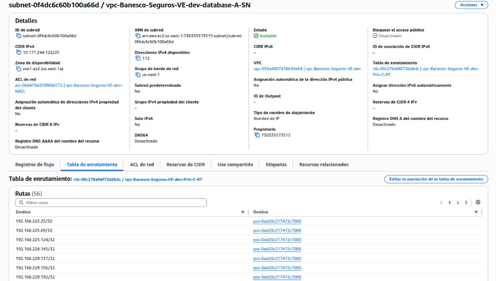
database-A-SN (referencia): ya existe
192.168.229.137/32 → pcx-0ad20c217472c7080. No asociar esta subnet al servicio.
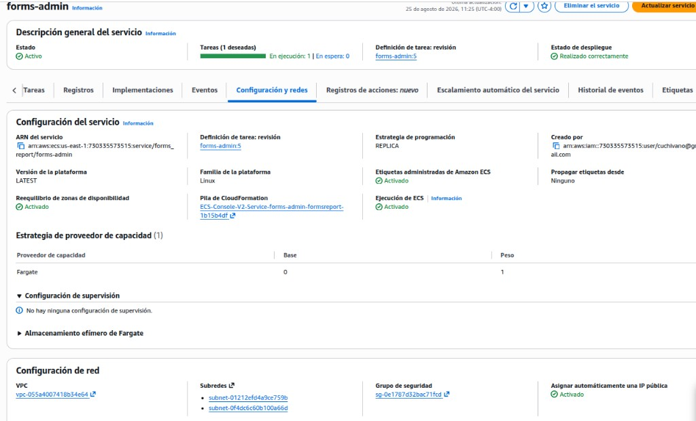
pub-A + database-A.
Recomendación vigente: dejar solo pub-A
+ IP pública ENABLED + SG forms-sg-ecs.
database-A
(NAT) la consola/Forms por IP pública no responde aunque AdminServer
escuche en :7001 dentro del contenedor. Usar solo pub-A.
pub-A (ruta a la BD — suficiente para Oracle)
Este paso es el que sustituye la necesidad de asociar database-A.
En Pub-RT agregar destino 192.168.229.137/32 vía la misma
interconexión peering que ya usa database-A.
pub-A / subnet-01212efd4a9ce759brtb-0a99542c9d91cd2cc192.168.229.137/32pcx-0ad20c217472c7080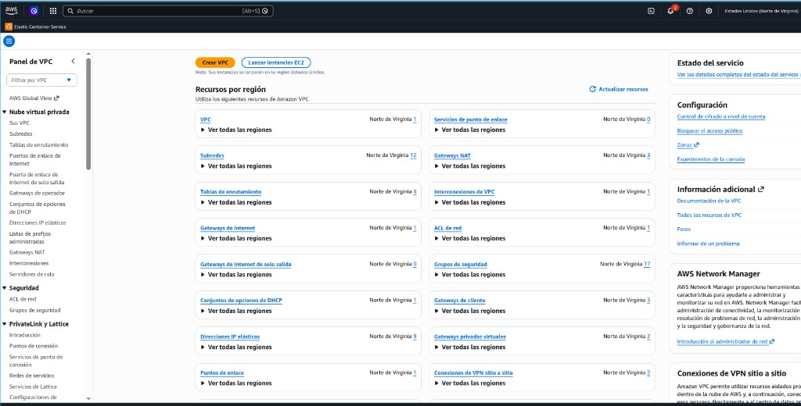
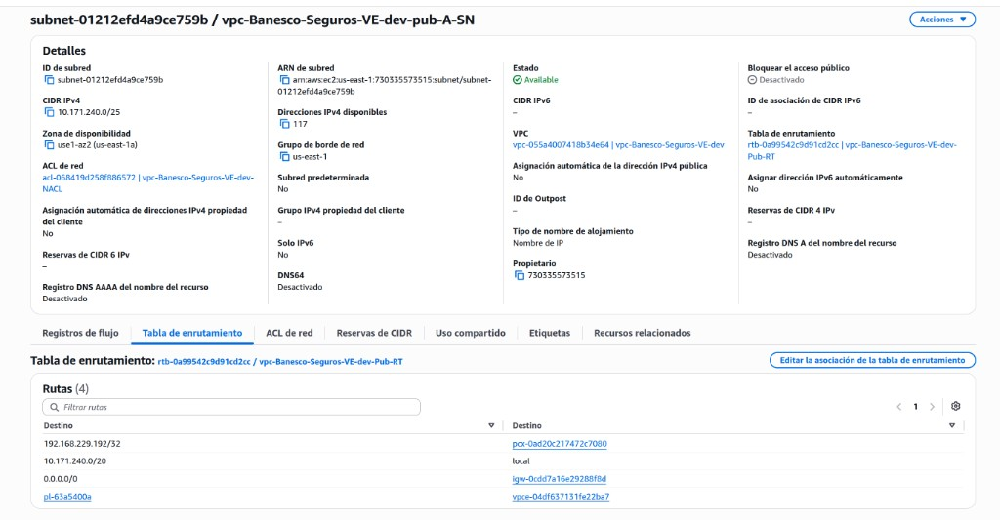
pub-A: abrir el enlace de la route table Pub-RT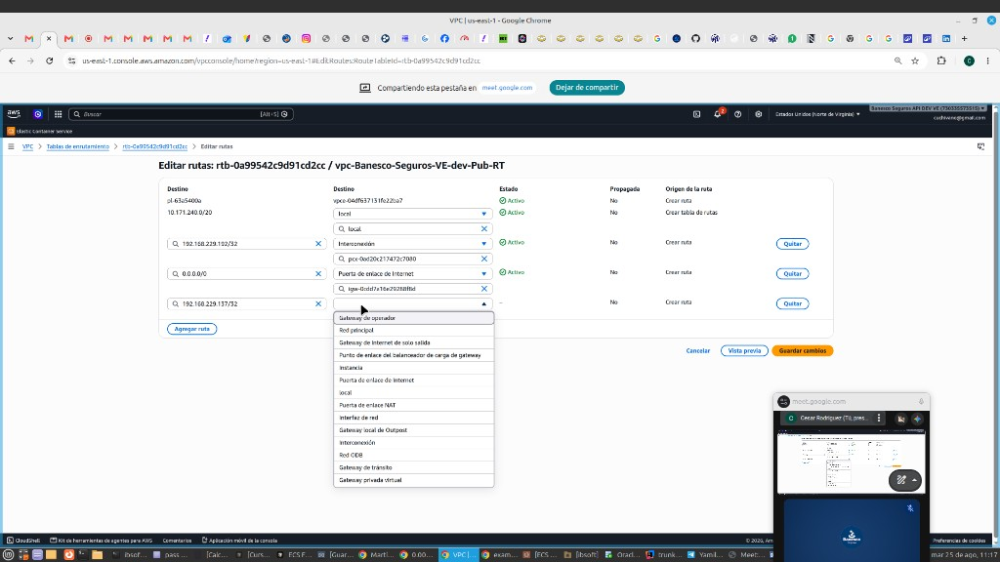
192.168.229.137/32, target Interconexión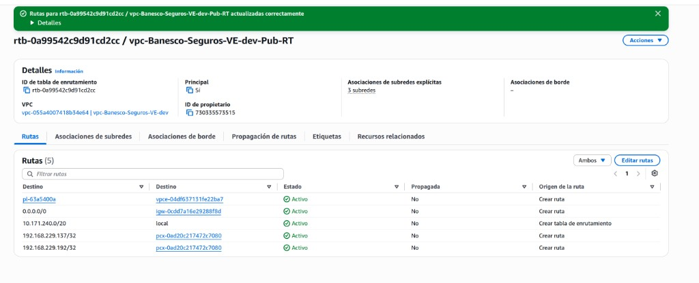
Pub-RT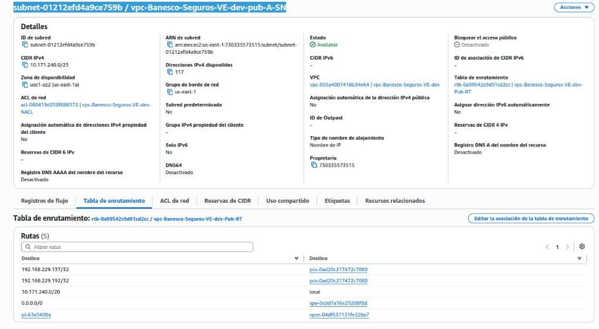
pub-A:
192.168.229.137/32 → pcx-0ad20c217472c7080 + 0.0.0.0/0 → igw
→ BD + IP pública desde la misma subnet
sg-0e1787d32bac71fcd (el propio forms-sg-ecs, se elige en el buscador bajo
Grupos de seguridad). Cubre AdminServer ↔ Node Manager ↔ managed y Coherence (UDP 7574)
entre admin, forms y reports sin exponer esos puertos a Internet.
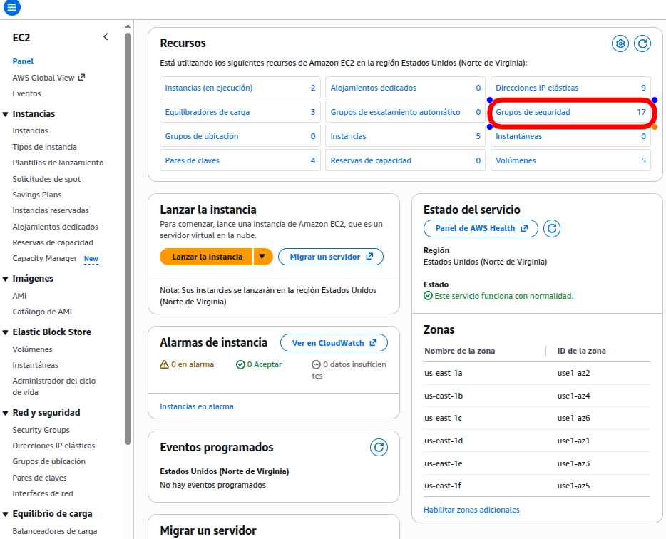
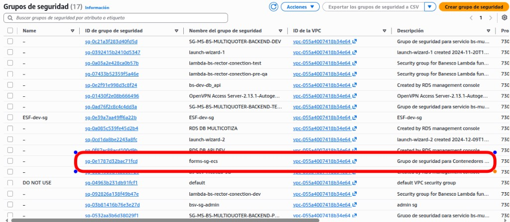
forms-sg-ecs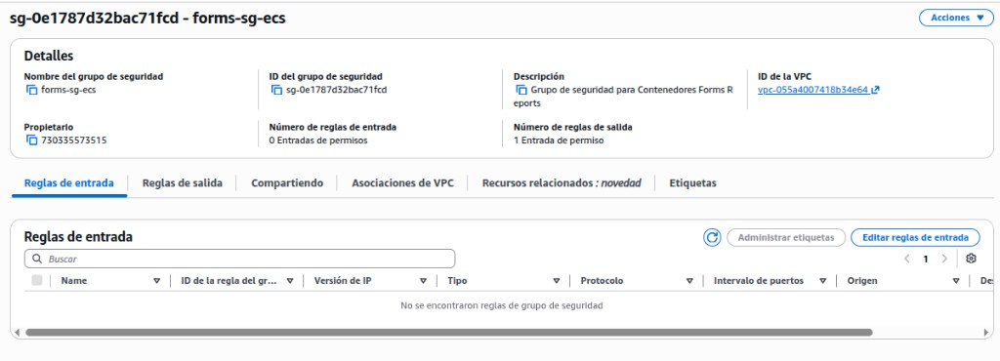
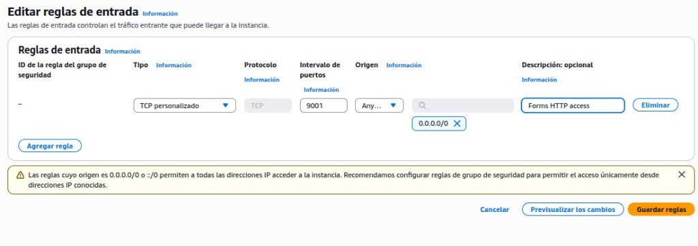
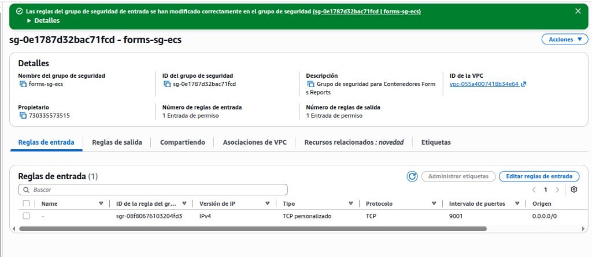
0.0.0.0/0 para el puerto 9001. Limitar origen a My IP o red corporativa.
0.0.0.0/0 en DEV, reemplázalo por la tabla exacta de acceso antes de pasar a QA/PROD:
| Puerto | Uso | Origen recomendado |
|---|---|---|
9001 | Forms HTTP | My IP /32 o red corporativa |
9501 | Forms HTTPS | My IP /32 o red corporativa |
7001 | AdminServer console | My IP /32 o red corporativa |
9991 | Admin port managed server | Solo red interna / SG interno |
5556 | NodeManager | Solo red interna / SG interno |
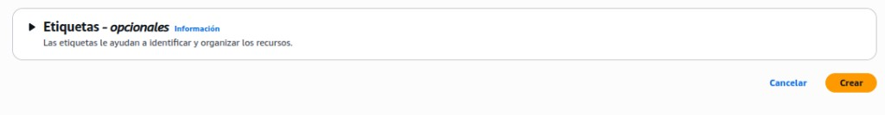
aws ecs execute-command \
--cluster forms_report \
--task <TASK_ID> \
--container forms-server \
--interactive \
--command "/bin/bash"
# Verificar montajes df -h ls /u01/oracle/user_projects/domains ls /u01/oracle/scripts # Arranque manual (si usaste sleep infinity) /u01/oracle/scripts/entrypoint.sh
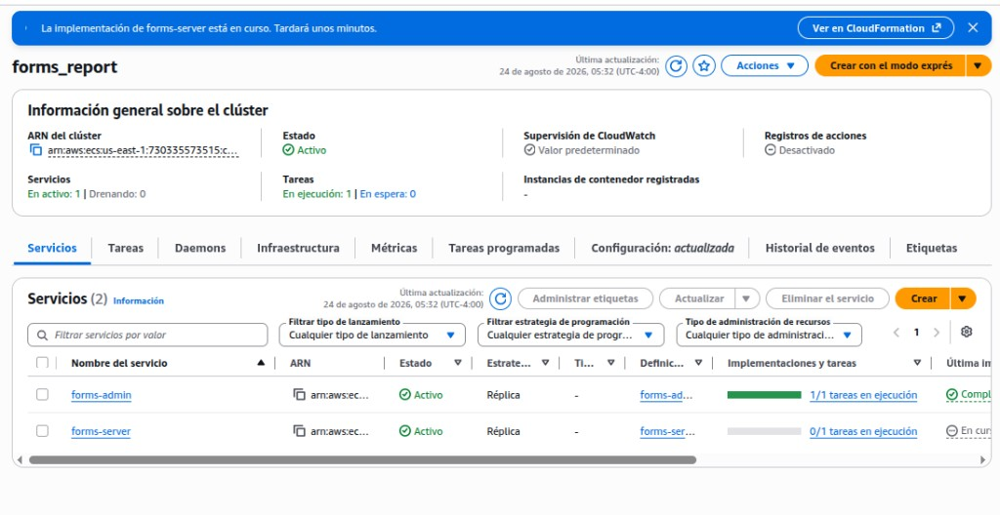
forms-server creado; implementación en curso (0/1 → 1/1)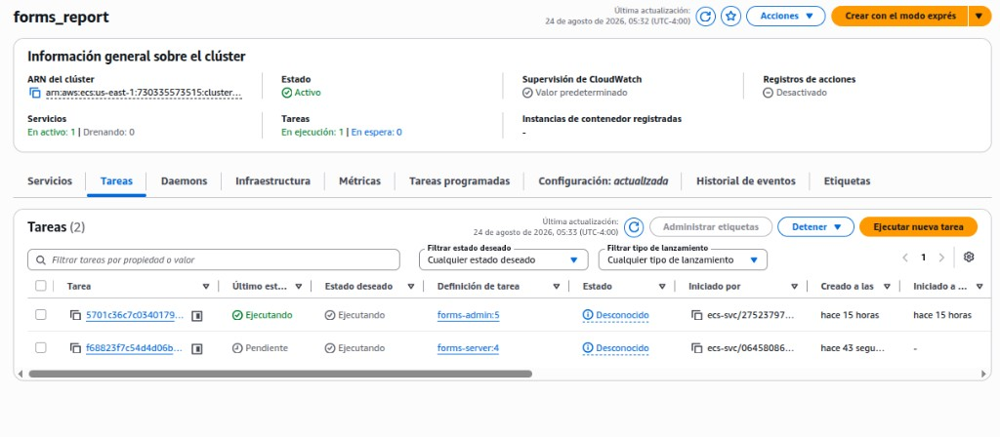
forms-admin:5 Running; forms-server:4 Pending (pull/arranque)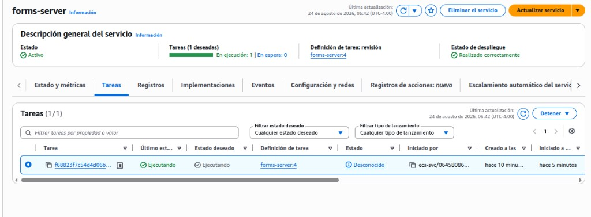
forms-server activo: 1/1 tarea Ejecutando (forms-server:4)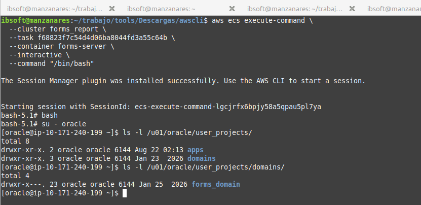
forms-server: su - oracle y montajes apps/domains/forms_domainforms.localHecho
Equivalente al DNS de servicio en docker-compose (weblogic-admin).
Se crea un namespace DNS privado en AWS Cloud Map para que las tareas ECS
resuelvan nombres dentro de la VPC (sin usar IP fija).
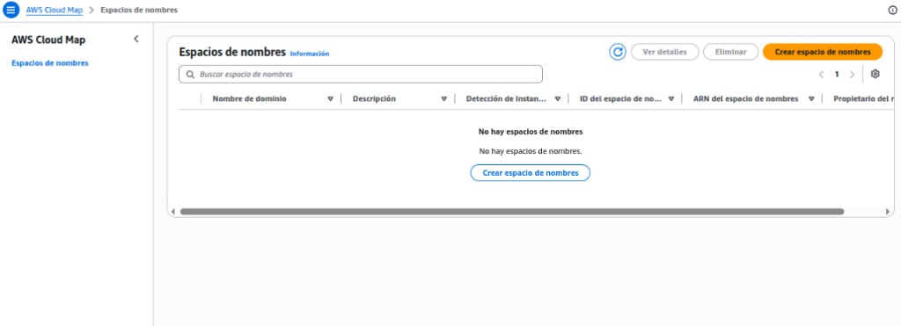
| Campo | Valor |
|---|---|
| Nombre del espacio de nombres | forms.local |
| Descripción | DNS interno Forms/Reports |
| Detección de instancia | Llamadas a la API y consultas de DNS en VPC (no “solo API”) |
| VPC | vpc-055a4007418b34e64 (vpc-Banesco-Seguros-VE-dev) |
| TTL (SOA) | 15 segundos |
weblogic-admin.forms.local
no resolverá por DNS (no hay hosted zone privada). Debe ser
API + consultas de DNS en VPC.
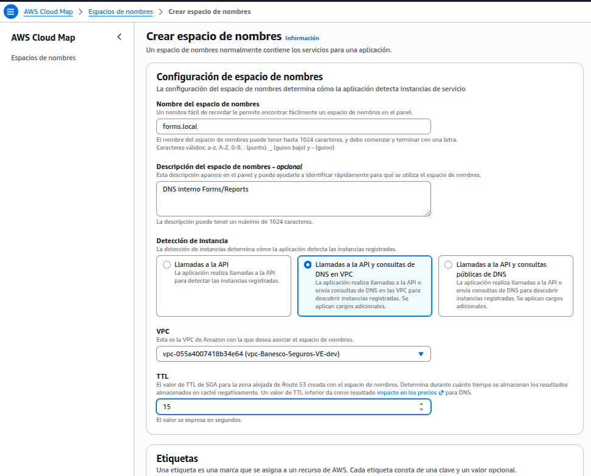
forms.local, detección DNS en VPC,
VPC de Banesco Seguros DEV, TTL 15
Pulsa Crear espacio de nombres y espera a que quede activo.
| Campo | Valor obtenido |
|---|---|
| Nombre de dominio | forms.local |
| ID del espacio de nombres | ns-r3zqawwpjtp5pzue |
| ARN | arn:aws:servicediscovery:us-east-1:730335573515:namespace/ns-r3zqawwpjtp5pzue |
| Detección | API + consultas DNS en VPC |
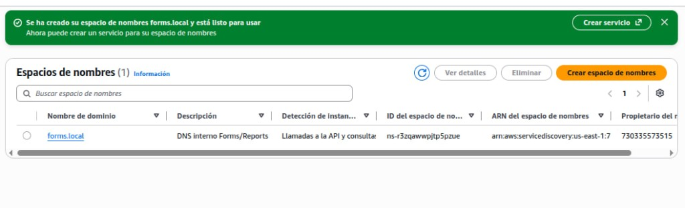
forms.local listo
(ns-r3zqawwpjtp5pzue)
forms-admin
con Service Discovery nombre weblogic-admin
→ DNS weblogic-admin.forms.local. Luego actualizar
ADMIN_SERVER_HOST en la task definition de forms-server.
weblogic-admin (servicio forms-admin)Hecho
En ECS la detección de servicios se configura al crear el servicio
(no se puede añadir después con un simple “Actualizar”). Si forms-admin
ya existía sin Discovery: eliminar el servicio (sin borrar la task definition)
y volver a crearlo con la misma red/task def + esta sección.
| Campo | Valor |
|---|---|
| Cluster | forms_report |
| Task definition | forms-admin:5 (o la revisión actual) |
| Nombre del servicio | forms-admin |
| Desired tasks | 1 |
| Compute | Fargate |
| Red | VPC + solo pub-A + SG forms-sg-ecs + IP pública ENABLED (BD vía ruta en Pub-RT; no asociar database-A) |
| ECS Exec | Activado |
En el asistente de creación, sección Detección de servicios - opcional:
| Campo | Valor |
|---|---|
| Utilizar la detección de servicios | Marcado |
| Espacio de nombres | Existente: forms.local (ns-r3zqawwpjtp5pzue) |
| Servicio de detección | Crear un nuevo servicio de detección |
| Nombre de detección | weblogic-admin |
| DNS resultante | weblogic-admin.forms.local |
| Propagación estado ECS | Habilitada |
| Tipo de registro DNS | A |
| TTL | 15 |
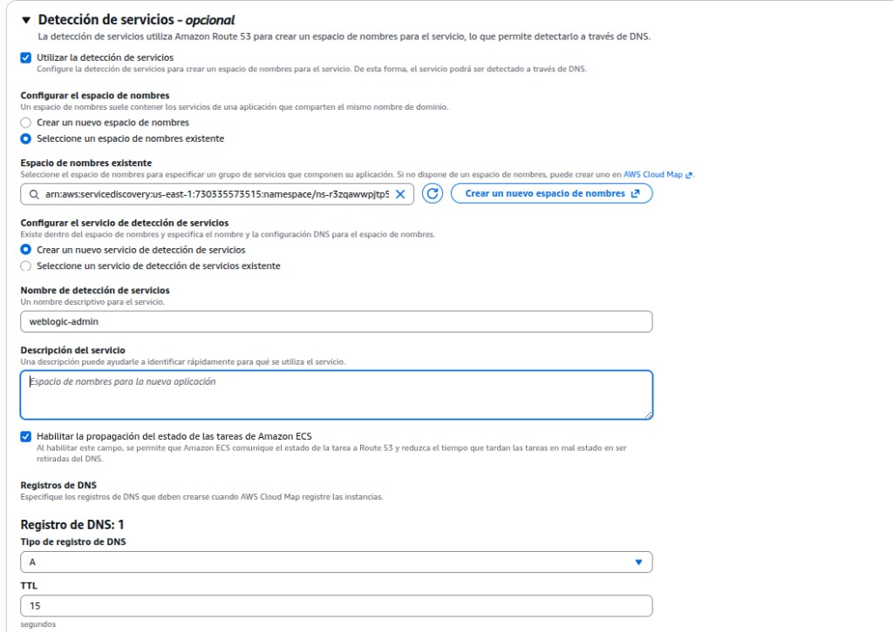
forms.local,
nombre weblogic-admin, registro A, TTL 15,
propagación de estado ECS activada
weblogic-admin.forms.local.
forms.local → servicio weblogic-admin → instancia con IP privada.forms-server):getent hosts weblogic-admin.forms.local timeout 5 bash -c 'echo >/dev/tcp/weblogic-admin.forms.local/7001' && echo OK || echo FAIL
forms-server con ADMIN_SERVER_HOST=weblogic-admin.forms.local.
weblogic-admin → weblogic-admin.forms.local)Hechoset-cloudmap-hostnames.sh), este paso queda como verificación y referencia
del problema; no hay que editar nada a mano.
En docker-compose, el hostname corto weblogic-admin lo resuelve la red
interna de Docker. Con ECS Service Discovery + AWS Cloud Map (namespace
forms.local), el nombre registrado es el FQDN:
weblogic-admin.forms.local
El short name weblogic-admin no resuelve solo dentro de la VPC
(salvo search domain o /etc/hosts). Si el dominio Forms/Reports se creó con
hostnames de compose, NodeManager y AdminServer fallan al arrancar.
java.net.UnknownHostException: weblogic-admin: Name or service not known <SEVERE> <Fatal error in NodeManager server>
NodeManager no puede hacer bind/listen → procesos java /
startWebLogic.sh terminan (zombies) y la consola en :7001 no responde,
aunque el contenedor ECS siga RUNNING (sleep infinity).
En el dominio montado por EFS (ruta contenedor
/u01/oracle/user_projects/domains/forms_domain) se actualizó el listen address
de weblogic-admin a weblogic-admin.forms.local al menos en:
| Archivo (ruta completa en el contenedor) | Cambio |
|---|---|
/u01/oracle/user_projects/domains/forms_domain/nodemanager/nodemanager.properties |
ListenAddress=weblogic-admin.forms.local |
/u01/oracle/user_projects/domains/forms_domain/config/config.xml |
<listen-address>weblogic-admin.forms.local</listen-address>
(AdminServer / Machine según el dominio) |
.../config/fmwconfig/servers/AdminServer/applications/em/META-INF/emoms.properties).
Lo crítico para el arranque es NodeManager + config.xml.
Auditoría rápida antes de arrancar:
grep -RIn --exclude-dir=tmp --exclude-dir=cache --exclude='*.log' \
-E 'weblogic-admin' \
"$DOMAIN_HOME/nodemanager" "$DOMAIN_HOME/config" /u01/oracle/scripts 2>/dev/null | head -80
getent hosts weblogic-admin.forms.local
# Debe coincidir con la IP VPC de la tarea (p. ej. eth1), NO con eth0 169.254.x.x
ip -4 -o addr show | awk '{print $2,$4}'
| Componente | Impacto |
|---|---|
| NodeManager | Falla si ListenAddress es el short name no resoluble |
| AdminServer | Bind / registro con hostname de Machine / listen-address |
| Forms / Reports (managed) | Task def / scripts: usar ADMIN_SERVER_HOST=weblogic-admin.forms.local |
| Coherence WKA / Machines | Hostnames compose (weblogic-forms, weblogic-reports)
también deben registrarse en Cloud Map o actualizarse al FQDN |
| Cloud Map | Tras recrear la tarea, el registro A apunta a la IP nueva; validar DNS = IP local antes de arrancar |
docker-compose) usando el sufijo .forms.local en los nombres de
host de los servidores, de modo que coincidan con el DNS que generará Cloud Map en ECS.
| En docker-compose / dominio | Equivalente Cloud Map (namespace forms.local) |
|---|---|
weblogic-admin.forms.local | servicio Discovery weblogic-admin |
weblogic-forms.forms.local | servicio Discovery weblogic-forms |
weblogic-reports.forms.local | servicio Discovery weblogic-reports |
Así, nodemanager.properties, config.xml, Machines y
ADMIN_SERVER_HOST ya apuntan al FQDN y no hace falta reescribir
el dominio al pasar de compose a ECS. Si el dominio ya existe con short names, el remapeo
a *.forms.local es obligatorio antes de un arranque estable en AWS: usar
/u01/oracle/scripts/set-cloudmap-hostnames.sh (Paso 0).
Durante el levantamiento de forms-admin, la creación principal se hizo por consola.
La CLI se usó para exportar configuración, diagnosticar red/ECR/EFS,
abrir NFS y ECS Exec. Los mismos comandos aplican a
forms-server cambiando nombres de servicio/contenedor/revisión.
us-east-1. Cluster: forms_report.
Archivos locales de respaldo: conf_json/forms-admin.json, conf_json/forms-server.json.
Función: respaldar y revisar redes, SG, IP pública y definición de tarea.
aws ecs describe-services \
--cluster forms_report \
--services forms-admin \
--region us-east-1 \
--output json \
> conf_json/forms-admin-service.json
aws ecs describe-services \
--cluster forms_report \
--services forms-admin \
--region us-east-1 \
--query 'services[0].{taskDefinition:taskDefinition,networkConfiguration:networkConfiguration,desiredCount:desiredCount,enableExecuteCommand:enableExecuteCommand,subnets:networkConfiguration.awsvpcConfiguration.subnets,securityGroups:networkConfiguration.awsvpcConfiguration.securityGroups,assignPublicIp:networkConfiguration.awsvpcConfiguration.assignPublicIp}' \
--output json \
> conf_json/forms-admin-service-red.json
aws ecs describe-task-definition \
--task-definition forms-admin:5 \
--region us-east-1 \
--query taskDefinition \
--output json \
> conf_json/forms-admin.json
Función: verificar pub-A (IGW + ruta BD) y database-A (peering a Oracle).
Útil ante timeout ECR o ORA-12170.
aws ec2 describe-subnets \
--subnet-ids \
subnet-01212efd4a9ce759b \
subnet-0f4dc6c60b100a66d \
--region us-east-1 \
--query 'Subnets[*].{Id:SubnetId,Name:Tags[?Key==`Name`].Value|[0],Public:MapPublicIpOnLaunch,Az:AvailabilityZone}' \
--output table
# Rutas de pub-A (debe incluir 192.168.229.137/32 → pcx)
aws ec2 describe-route-tables \
--filters Name=association.subnet-id,Values=subnet-01212efd4a9ce759b \
--region us-east-1 \
--query 'RouteTables[0].Routes[*].{Dest:DestinationCidrBlock,Gw:GatewayId,Pcx:VpcPeeringConnectionId,Nat:NatGatewayId,State:State}' \
--output table
# Rutas de database-A
aws ec2 describe-route-tables \
--filters Name=association.subnet-id,Values=subnet-0f4dc6c60b100a66d \
--region us-east-1 \
--query 'RouteTables[0].Routes[*].{Dest:DestinationCidrBlock,Gw:GatewayId,Pcx:VpcPeeringConnectionId,Nat:NatGatewayId,State:State}' \
--output table
pub-A +
assignPublicIp=ENABLED, con ruta 192.168.229.137/32 → pcx-0ad20c217472c7080
en Pub-RT (además del IGW). No asociar database-A
al servicio ECS.
Función: verificar reglas de entrada/salida del SG de la tarea y del EFS.
# SG de la tarea ECS aws ec2 describe-security-groups \ --group-ids sg-0e1787d32bac71fcd \ --region us-east-1 \ --output json # SG del EFS (ESF-dev-sg / EFS-dev-sg) aws ec2 describe-security-groups \ --group-ids sg-0e39a7aa49ff6a22b \ --region us-east-1 \ --output json
default | DO NOT USE (sg-04963b231db91fcf1) tenía 0 reglas de entrada y salida;
no usarlo en servicios ECS.
Función: confirmar IPs/subnets de montaje y SG asociado al filesystem.
aws efs describe-mount-targets \ --file-system-id fs-08471cc88d2a8edc3 \ --region us-east-1 \ --output table # Sustituir <fsmt-...> por un MountTargetId del comando anterior aws efs describe-mount-target-security-groups \ --mount-target-id <fsmt-...> \ --region us-east-1
Función: permitir montaje EFS desde tareas con SG forms-sg-ecs.
Corrige mount.nfs4: Connection timed out.
aws ec2 authorize-security-group-ingress \ --group-id sg-0e39a7aa49ff6a22b \ --protocol tcp \ --port 2049 \ --source-group sg-0e1787d32bac71fcd \ --region us-east-1
forms-sg-ecs (sg-0e1787d32bac71fcd) → destino EFS SG (sg-0e39a7aa49ff6a22b), puerto TCP 2049.
Función: shell interactivo en una tarea Running (requiere Exec ON + Rol de tarea SSM).
# Prerrequisito local: Session Manager Plugin curl "https://s3.amazonaws.com/session-manager-downloads/plugin/latest/ubuntu_64bit/session-manager-plugin.deb" \ -o session-manager-plugin.deb sudo dpkg -i session-manager-plugin.deb session-manager-plugin # Conexión (admin) aws ecs execute-command \ --cluster forms_report \ --task <TASK_ID> \ --container admin \ --interactive \ --command "/bin/bash" # Conexión (forms-server) aws ecs execute-command \ --cluster forms_report \ --task <TASK_ID> \ --container forms-server \ --interactive \ --command "/bin/bash"
Dentro del contenedor (verificación típica):
df -h ls /u01/oracle/user_projects/domains ls /u01/oracle/scripts # Arranque manual si el CMD es sleep infinity: # /u01/oracle/scripts/entrypoint_persistente.sh # admin # /u01/oracle/scripts/entrypoint.sh # forms
| Concepto | Admin | Forms |
|---|---|---|
| Servicio | forms-admin | forms-server |
| Task definition | forms-admin:5 | forms-server:4 |
| Contenedor | admin | forms-server |
| Log group | /ecs/forms-admin | /ecs/forms-server |
Ante errores tipo ORA-12170 (TCP connect timeout) desde el contenedor hacia Oracle
(ej. 192.168.229.137:1521), estos comandos permiten
descartar Task Definition y Security Group antes de escalar a soporte de redes.
Función: listar subnets, SG e IP pública del servicio.
aws ecs describe-services \ --cluster forms_report \ --services forms-admin \ --region us-east-1 \ --query 'services[0].networkConfiguration' \ --output json
Equivale para Forms: --services forms-server.
Función: confirmar que el SG no bloquea salida (p. ej. TCP 1521).
aws ec2 describe-security-groups \ --group-ids sg-0e1787d32bac71fcd \ --region us-east-1 \ --query 'SecurityGroups[0].IpPermissionsEgress' \ --output json
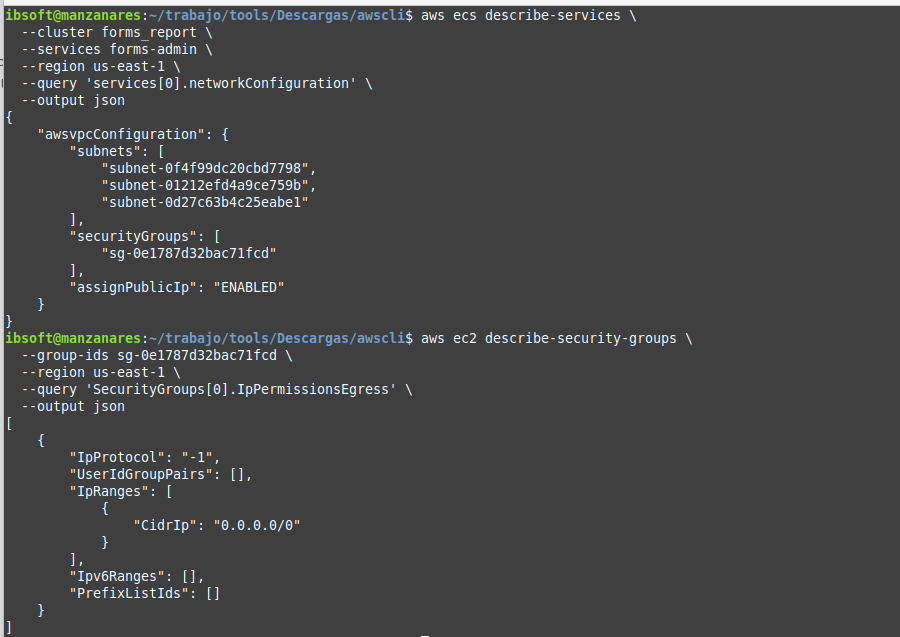
pub-A,
SG forms-sg-ecs, IP pública ENABLED; egress All → 0.0.0.0/0
(SG no bloquea la BD).
0.0.0.0/0, se descarta el SG de la tarea como causa del timeout a Oracle.
pub-A (suficiente para BD)Función: confirmar ruta 192.168.229.137/32 → pcx-… en
Pub-RT (Paso 8c). Con eso no hace falta asociar database-A
al servicio.
aws ec2 describe-route-tables \
--filters Name=association.subnet-id,Values=subnet-01212efd4a9ce759b \
--region us-east-1 \
--query 'RouteTables[0].Routes[*].{Dest:DestinationCidrBlock,Gw:GatewayId,Pcx:VpcPeeringConnectionId,Nat:NatGatewayId,State:State}' \
--output table
pub-A tras Paso 8c:
192.168.229.137/32 → pcx-0ad20c217472c7080 + 0.0.0.0/0 → igw-....
pub-A el tráfico a 192.168.229.137:1521
caía en la ruta default al IGW → ORA-12170.
Con la ruta /32 vía peering, la tarea en pub-A alcanza la BD sin
asociar database-A. Si la tarea cae en database-A, la IP pública
no responde desde Internet (NAT).
Además del test TCP, se puede validar con sqlplus desde el contenedor.
En la práctica, sqlplus falló hasta instalar la librería libaio
(dependencia nativa de cliente Oracle Instant Client / tools en ORACLE_HOME).
yum/microdnf/apt en una sesión ECS Exec
se pierde al recrear la tarea. Incluir libaio (p. ej. paquete
libaio / libaio1) en la creación de la imagen ECR
(forms-docker) y regenerar/pushear la imagen antes de redesplegar.
Instalación temporal solo para una prueba puntual (no persistente):
# Ejemplo Oracle Linux / RHEL (dentro del contenedor, como root) # yum install -y libaio # o: microdnf install -y libaio
Pruebas de conectividad:
# TCP (no requiere libaio) timeout 5 bash -c 'echo >/dev/tcp/192.168.229.137/1521' && echo OK || echo FAIL # sqlplus (requiere libaio en la imagen) $ORACLE_HOME/bin/sqlplus USUARIO/PASS@192.168.229.137:1521/METAPRD
sqlplus falla por
libaio.so.1: cannot open shared object file, falta el paquete en la imagen.
| Elemento | Resultado | ¿Bloquea BD? |
|---|---|---|
| Task Definition | No define firewall | No |
SG forms-sg-ecs egress | All → 0.0.0.0/0 | No |
Servicio: solo pub-A | Topología recomendada Paso 8 | — |
database-A en el servicio | No necesaria (si se asocia: IP pública puede no responder) | — |
pub-A (Pub-RT) + Paso 8c | 192.168.229.137/32 → pcx + IGW | No (tras ajuste) |
| Firewall listener Oracle | Validar TCP 1521 desde CIDR de tareas | Posible |
no space left on device; ephemeral ~100 GiB.sleep infinity (Paso 3d) — permite ECS Exec y arranque manual mientras DNS/dominio no están listos.
Configurar entrypoint sh,-c + comando sleep,infinity.
No redefinir PATH en la Task Definition sin rutas de sistema (rompe sleep).libaio hace falta para sqlplus / cliente Oracle;
net-tools y nano ayudan en diagnóstico/edición dentro del contenedor.
No instalarlos solo con ECS Exec: el filesystem es efímero y se pierde al recrear la tarea.
Deben ir en la creación de la imagen y regenerar/pushear a ECR.default sin salida (timeout ECR); usar forms-sg-ecs.rootDirectory sin prefijo erróneo /domain.pub-A en el servicio (Paso 8) — no asociar database-A; si la tarea cae en privada, la IP pública no responde (NAT ≠ IGW).Pub-RT (Paso 8c) — 192.168.229.137/32 → pcx basta para Oracle desde pub-A.weblogic-admin); Cloud Map expone el FQDN weblogic-admin.forms.local./etc/hosts)..../nodemanager/nodemanager.properties (ListenAddress) y
.../config/config.xml (listen-address) al FQDN; si no → UnknownHostException / zombies.getent hosts …forms.local = IP VPC de la tarea (eth1), no eth0 169.254… (ECS Exec).weblogic-forms, weblogic-reports) también necesitan Discovery o FQDN.
Hacerlo desde el inicio con set-cloudmap-hostnames.sh (Paso 0); un short name sin resolver
deja a ese managed fuera del WKA y no arranca si el otro managed no responde.ADMIN_SERVER_HOST=weblogic-admin.forms.local (Paso 3).docker-compose, definir los hostnames de contenedores ya con el sufijo del namespace
(ej. weblogic-admin.forms.local, weblogic-forms.forms.local), de modo que
coincidan con Cloud Map y no sea necesario modificar después
nodemanager.properties, config.xml ni otros archivos del dominio.sleep infinity con Java muerto.<defunct> — ya están muertos; no se limpian con kill si el padre es sleep infinity.pub-A + SG 7001/9001.frmweb en el servidor (default.env, libs, paths).javaws (IcedTea/OpenWebStart); JDK 17 no trae JWS.config/fmwconfig/jps-config-jse.xml, config/jdbc/opss-datasource-jdbc.xml,
config/jdbc/WLSRuntimeSchemaDataSource-jdbc.xml y otros.
WebLogic no resuelve variables de entorno de forma nativa en esos XML.
Objetivo: parametrizar la URL (y alinear bootstrap OPSS si aplica) vía env en el contenedor
(entrypoint con sed/envsubst o WLST offline) al lanzar la tarea,
sin reeditar el dominio a mano por entorno.oracle en la ejecución (Paso 9 / ECS Exec) —
la ejecución de los contenedores (arranque de AdminServer / WLS_FORMS, scripts
y shell interactivo) debe realizarse con el usuario oracle, para que se
inicialicen / apliquen correctamente las variables de entorno definidas en la
Task Definition asociada al servicio (p. ej. JAVA_OPTIONS,
ADMIN_SERVER_HOST, DOMAIN_HOME).
En ECS Exec:
aws ecs execute-command \ --cluster forms_report \ --task <TASK_ID> \ --container forms-server \ --interactive \ --command "su - oracle"(Equivalente para admin:
--container admin.)
Evitar trabajar como root para el arranque de WebLogic.WLS_FORMS —
crear servers/WLS_FORMS/security/boot.properties dentro del dominio
($DOMAIN_HOME/servers/WLS_FORMS/security/boot.properties):
username=weblogic password=<clave>En el primer arranque WebLogic encripta el archivo;
startManagedWebLogic.sh
deja de pedir credenciales.
Las variables ADMIN_USER / ADMIN_PASSWORD del
docker-compose no bastan por sí solas (el entrypoint no las
usa al arrancar el managed server).
Tampoco sirve export WLS_USER / WLS_PW antes del script:
startManagedWebLogic.sh las reinicia vacías.
Usar boot.properties en security/ del managed server
(no confundir con el de Node Manager bajo .../data/nodemanager/).
Documentación ECS Forms — capturas en assets/. Ver también ECS Reports.